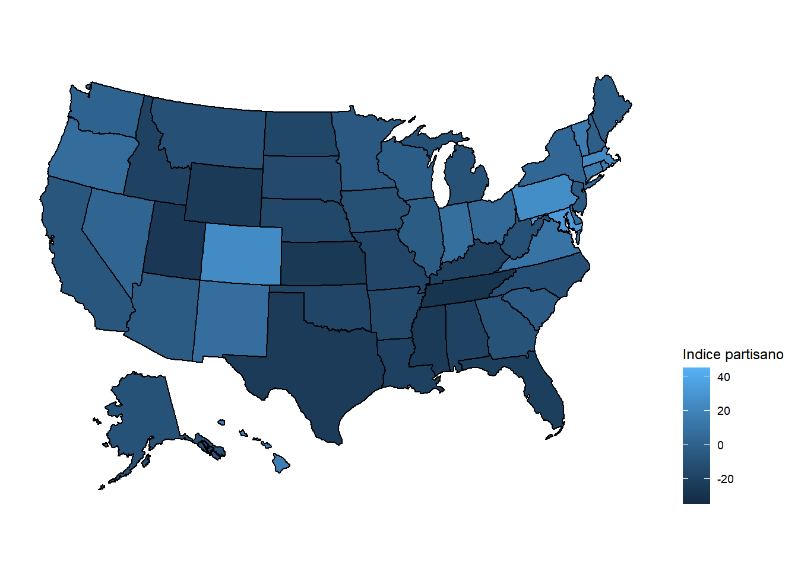

Chapter 4 Analisis Exploratorio
Cargamos librerias
library(tidyverse)## Registered S3 methods overwritten by 'tibble':
## method from
## format.tbl pillar
## print.tbl pillar## -- Attaching packages --------------------------------------- tidyverse 1.3.0 --## v ggplot2 3.3.3 v purrr 0.3.4
## v tibble 3.0.3 v dplyr 1.0.7
## v tidyr 1.1.1 v stringr 1.4.0
## v readr 1.3.1 v forcats 0.5.0## -- Conflicts ------------------------------------------ tidyverse_conflicts() --
## x dplyr::filter() masks stats::filter()
## x dplyr::lag() masks stats::lag()library(ggplot2)
library(dplyr)
library(readr)Cargamos datos de Fivethirtyeight
Unimos las base de datos por lo que tenemos
dt<-merge(x = districts, y = states, by = "state")Quitamos columnas no importantes
dt <- select(dt,-c(statefp.x, maptype.x, current_map,impossible,statefp.y))
dt$compactness_rank<-as.character(dt$compactness_rank)states %>%
filter(!is.na(compactness_rank)) %>%
ggplot(aes(compactness_rank,fill=maptype))+
geom_bar()+labs(title = "Ranking de nivel de compacto de los distritos",x="Ranking",
y="Cantitad",fill="Tipo de mapa")+scale_fill_viridis_d(option = "D")+
theme_minimal()Si miramos lo compacto de nuestros distritos a medida que aumenta el ranking (dismuyendo su nivel de compacto) podemos concluir esto favorece a los republicanos y a los democratas le sirve uno rango medio en el ranking.
states %>%
filter(!is.na(efficiency_gap_extra_seats)) %>%
ggplot(aes(efficiency_gap_extra_seats,fill=maptype))+
geom_bar()+labs(title = "Ranking de nivel de compacto de los distritos",x="Ranking",
y="Cantitad",fill="Tipo de mapa")+scale_fill_viridis_d(option = "D")+
theme_minimal()districts %>%
filter(!is.na(minority_chance)) %>%
ggplot(aes(y=minority_chance,x=maptype,fill=maptype))+
geom_boxplot(scale = "area")+labs(title = "Probablidad de la minoria",x="Tipo de mapa", y="Porcentaje de la minoria")+scale_fill_viridis_d(option = "D")+
guides(fill=FALSE,x = guide_axis(angle = 10))+
theme_minimal()## Warning: Ignoring unknown parameters: scale
Podemos concluir que la probablidad de la minoria amuenta cuando los mapas son trazados a favor de una mejor relacion mayoria-minoria. El Partido democrata es el mas favorecido cuando la probablidad de la minoria aumenta.
states %>%
filter(!is.na(county_splits)) %>%
ggplot(aes(y=county_splits,x=maptype,fill=maptype))+
geom_boxplot(scale = "area")+labs(title = "Cantidad de divisiones de los condados",x="Tipo de mapa", y="cantidad de divisiones")+scale_fill_viridis_d(option = "D")+
guides(fill=FALSE,x = guide_axis(angle = 10))+
theme_minimal()## Warning: Ignoring unknown parameters: scale
Cuando observamos la cantidad de veces que se divide un condado el tipo de mapa con mayores divisiones es el diseño con logaritmo para ser compacto y que menos divisiones el más compacto.
states %>%
filter(!is.na(district_perimeters)) %>%
ggplot(aes(y=district_perimeters,x=maptype,fill=maptype))+
geom_boxplot(scale = "area")+
labs(title = "Perimetro del distrito",x="Tipo de mapa", y="Perimentro")+scale_fill_viridis_d(option = "D")+
guides(fill=FALSE,x = guide_axis(angle = 10))+
theme_minimal()## Warning: Ignoring unknown parameters: scale
Si observamos el perimetro del distrito ningun tipo de mapa se ve mas favoricido. # Mapas Estos son los mapas que se van a graficar con shiny se hablitara la opción de escoger que variable se desea observar. Librerias
library(usmap)## Warning: package 'usmap' was built under R version 4.0.5library(ggplot2)
library(shapefiles)## Warning: package 'shapefiles' was built under R version 4.0.3## Loading required package: foreign##
## Attaching package: 'shapefiles'## The following objects are masked from 'package:foreign':
##
## read.dbf, write.dbflibrary(maptools)## Warning: package 'maptools' was built under R version 4.0.4## Loading required package: sp## Warning: package 'sp' was built under R version 4.0.4## Checking rgeos availability: FALSE
## Note: when rgeos is not available, polygon geometry computations in maptools depend on gpclib,
## which has a restricted licence. It is disabled by default;
## to enable gpclib, type gpclibPermit()dt_current<-dt %>% filter(maptype.y=="current")
dt_current<-dt %>% filter(maptype.y=="current")plot_usmap(data = dt_current, values = "efficiency_gap", color = "black") +
scale_fill_viridis_c()+ labs(title = "Brecha de eficacia en la eleccion",fill="Eficencia") theme(legend.position = "right")## List of 1
## $ legend.position: chr "right"
## - attr(*, "class")= chr [1:2] "theme" "gg"
## - attr(*, "complete")= logi FALSE
## - attr(*, "validate")= logi TRUEplot_usmap(data = dt_current, values = "dem_chance", color = "black") +
scale_fill_continuous(name = "Chance de lo democratas", label = scales::comma) +
theme(legend.position = "right")
plot_usmap(data = dt_current, values = "PVI", color = "black") +
scale_fill_continuous(name = "Indice partisano", label = scales::comma) +
theme(legend.position = "right")
plot_usmap(data = dt_current, values = "compactness_rank", color = "black") +
scale_fill_discrete(name="Compacto")+
theme(legend.position = "right")